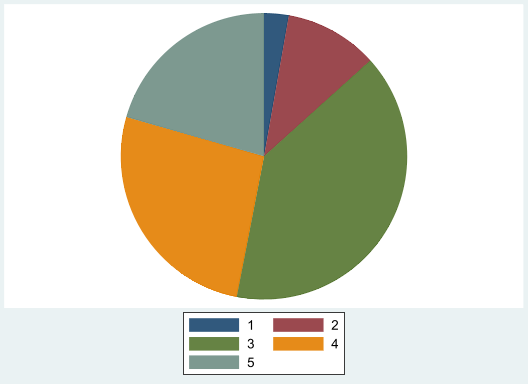
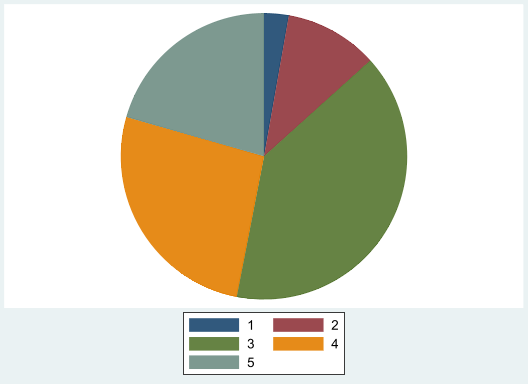
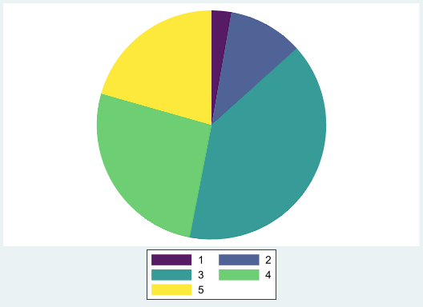
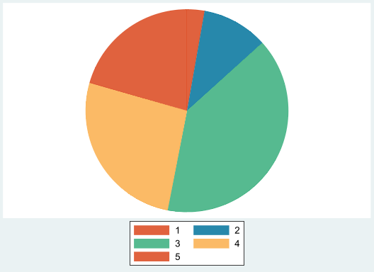
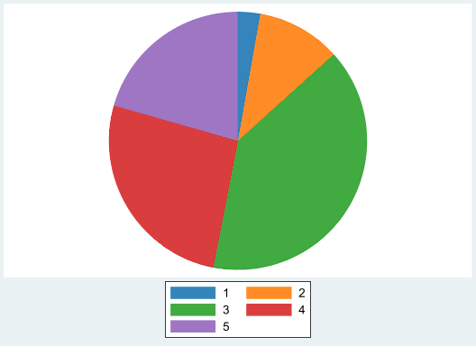
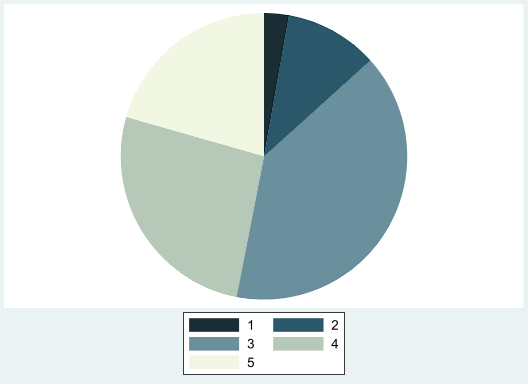

Code
set scheme white2
sysuse auto, clear
set scheme s2color
graph pie mpg, over(rep78)(1978 automobile data)
The ado way

I should start by saying that what I will be presenting here is not the only way. There are other ways to create and modify your schemes however you would like to do. Most people provide you with the full set of schemes for that purpose.
That being said, the command I’ll be presenting depends on a few tools built by Ben Jann: colorpalette, colorspace, as well as grstyle.
It also has only 1 purpose. Change the color settings from your current “scheme” to any other palette either available in colorpalette, or provided by the program.
So let me start
Why not?
Even though I suspect you are an economist, who does research, you may also be curious or may have some inclination for data visualization, which means you like to put some colors in your graphs.
Stata, as many other software, can handle colors pretty well, but its not very natural at it. Why? because it is an statistical/econometric software, and does not specialize much on design and colors.
In fact, a running comment, or complain, is why is it that they have such an ugly choice of colors for the default setting? And why are the graphics capabilities so limited/complex!
Luckily, many users have created tools to add color to your figures much easier. And that is the purpose of this new command. Add colors to your figures!
As I mentioned earlier, there are two very useful programs that mine builds on. These are colorpalette and grstyle, both by Ben Jann.
colorpalette helps create colors, call on palettes, modify properties, and translate them in a way that Stata will understand.
grstyle helps modifying the current scheme, so all graphs done afterward will use the modify schemes.
My program color_style is in fact a wrapper around colorpalette and grstyle. You can use it to call on a particular color palette, and will automatically apply it into your scheme.
It also brings some other colorpalettes that can be stored in memory, and applied to your graphs, but enough talk, lets see how it works!
First, setup. make sure you have the following programs installed in your computer
ssc install palettes
ssc install colrspace
ssc install grstyle
* And of course my program
ssc install color_style Lets start using default options for something simple. A pie Graph.
set scheme white2
sysuse auto, clear
set scheme s2color
graph pie mpg, over(rep78)(1978 automobile data)
This creates a pie graph with average MPG’s by number of repairs in 1978. But what I didn’t like default colors, you can request a change:
color_style viridis, n(5)
graph pie mpg, over(rep78)
Here, I’ll be using Viridis palette, but requesting only 5 colors. One can request up to 15 different colors.
But every body uses Viridis, what other palette can I use?
You can look into the helpfile of colorpalette for a large set of colors. But, color_style also comes with its own set!. Just type: color_style, list, and a list of additional palettes will come up.
But you want to see examples! Below, you can see three examples, first using egypt color palette, second using tableau, and third using your own colors
color_style egypt,
graph pie mpg, over(rep78) name(m1, replace)
**
color_style tableau
graph pie mpg, over(rep78) name(m2, replace)
** or your own
color_style #01161E #124559 #598392 #AEC3B0 #EFF6E0
graph pie mpg, over(rep78) name(m3, replace)


Now that you know the magic, it is fair to know the trick.
This command color_style works as a wrapper behind colorpalette'. It basically passes the information to this program to translate and create colors from either palettes, or directly provided colors, so it translates into RGB color code thatStata` understands.
After that, grstyle uses this information to change the colors of all graphic related styles (p1-p15), which is why there is a limitation of how many colors one can define using this method.
In any case, once you decide you like certain scheme, this small program should help to make it easy change colors, based on your needs.